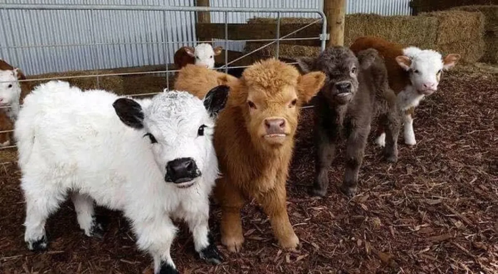

Minha Cidade - Ibiporã
Ibiporã é uma cidade linda e acolhedora no interior do Paraná. Veja algumas imagens da cidade:

Oi, meu nome é Pamela, tenho 16 anos e moro em Ibiporã - Paraná.
Estudo no Colégio Basílio de Lucca e trabalho como Auxiliar Administrativo.
Ibiporã é uma cidade linda e acolhedora no interior do Paraná. Veja algumas imagens da cidade:
Eu pretendo seguir minha carreira na área de Agronomia, Medicina Veterinária ou Zootecnia.
Estou muito interessada nessas áreas e quero contribuir com o desenvolvimento do campo e o bem-estar dos animais.

Zootecnia: é a ciência dedicada à produção, manejo, nutrição e melhoramento genético de animais domésticos e silvestres, visando eficiência produtiva com sustentabilidade. O zootecnista otimiza a produção de alimentos (carne, leite, ovos) e subprodutos, garantindo bem-estar animal e segurança alimentar.
Agronomia: é a ciência que une conhecimentos biológicos, exatas e sociais para otimizar a produção agropecuária, visando eficiência, sustentabilidade e conservação ambiental. Com duração média de 5 anos, o curso forma engenheiros agrônomos, que atuam no manejo de solo/culturas, agroindústria, gestão rural e pesquisa, com ampla demanda no mercado de trabalho.
Medicina Veterinaria: é a área da saúde dedicada ao cuidado, tratamento e bem-estar de animais domésticos, silvestres e de produção, além de atuar fortemente na saúde pública (zoonoses) e segurança alimentar. O curso é um bacharelado com duração média de 5 anos, abrangendo clínicas, cirurgias, nutrição e patologia
Se você deseja entrar em contato comigo, envie um e-mail para: pamela@gmail.com